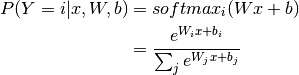
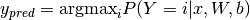

函数图像为：

这个函数的特点是它的值域是(0,1)，当x趋近
第一次碰到时很自然的发音是 /θi.ˈæ.noʊ/，不过如果看一些视频可能也有发/te.ˈaː.no/的。这两种都有，比较官方的说法可能是这个： https://groups.google.com/forum/#!topic/theano-users/em3XxB9Qufs
I think I say roughly /θi.ˈæ.noʊ/ (using the international phonetic alphabet), or /te.ˈaː.no/ when speaking Dutch, which is my native language. I guess the latter is actually closer to the original Greek pronunciation :)
另外从 http://deeplearning.net/software/theano/introduction.html 也有说明：
Theano was written at the LISA lab to support rapid development of efficient machine learning algorithms. Theano is named after the Greek mathematician, who may have been Pythagoras’ wife.
https://en.wikipedia.org/wiki/Theano_(philosopher )
Theano (/θɪˈænoʊ/; Greek: Θεανώ; fl. 6th-century BC), or Theano of Crotone,[1] is the name given to perhaps two Pythagorean philosophers.
因此用英语的发音是 (/θɪˈænoʊ/。
Theano是一个Python库，它可以让你定义，优化以及对数学表达式求值，尤其是多维数组(numpy的ndarray)的表达式的求值。对于解决大量数据的问题，使用Theano可能获得与手工用C实现差不多的性能。另外通过理由GPU，它能获得比CPU上的C实现快很多数量级。
Theano把计算机代数系统(CAS)和优化的编译器结合在一起。 它也可以对许多数学操作生产自定义的c代码。这种CAS和优化编译的组合对于有复杂数学表达式重复的被求值并且求值速度很关键的问题是非常有用的。对于许多不同的表达式只求值一次的场景，Theano也能最小化编译/分析的次数，但是仍然可以提供诸如自动差分这样的符号计算的特性。
Theano的编译器支持这些符号表达式的不同复杂程度的许多优化方法：
请参考http://deeplearning.net /software/theano/install.html，这里就不赘述了。
内容来自 http://deeplearning.net/software/theano/tutorial/adding.html
>>> import numpy
>>> import theano.tensor as T
>>> from theano import function
>>> x = T.dscalar('x')
>>> y = T.dscalar('y')
>>> z = x + y
>>> f = function([x, y], z)
>>> f(2, 3)
array(5.0)
我们这段代码首先定义了符号变量x和y，它们的类型是double。使用theano.tensor.dscalar(‘x’)定义了一个名字叫x的类型为double的标量(scalar)。
注意符号变量的名字是theano看到的，而我们把theano创建的dscalar赋给x是在python里的。在使用theano是我们需要区分普通的python变量和theano的符号变量。theano用符号变量创建出一个computing graph，然后在这个graph上执行各种运算。
定义了x和y之后，我们通过操作(op)+定义了符号变量z。
接下来我们定义了一个函数(function) f，这个函数的输入是符号变量x和y，输出是符号变量z
接下来我们可以”执行“这个函数 f(2,3)
运行 f = function([x, y], z)会花费比较长的时间，theano会将函数构建成计算图，并且做一些优化。
>>> type(x)
<class 'theano.tensor.var.TensorVariable'>
>>> x.type
TensorType(float64, scalar)
>>> T.dscalar
TensorType(float64, scalar)
>>> x.type is T.dscalar
True
dscalar(‘x’) 返回的对象的类型是theano.tensor.var.TensorVariable，也就是一种符号变量。这种对象有一个type属性，x.type是TensorType。对于dscalar，它的TensorType是64位的浮点数的一个标量。
除了变量，我们也可以定义向量(vector)和矩阵matrix。
然后用在前面增加’b’,’w’,’i’,’l’,’f’,’d’,’c’分别表示8位，16位，32位，64位的整数，float，double以及负数。比如imatrix就是32位整数类型的矩阵，dvector就是单精度浮点数的向量。
http://deeplearning.net/software/theano/tutorial/examples.html
这部分会介绍更多的theano的概念，最后包含一个Logistic Regression的例子，包括怎么用theano自动求梯度。
函数定义为：
函数图像为：
这个函数的特点是它的值域是(0,1)，当x趋近
我们经常需要对一个向量或者矩阵的每一个元素都应用一个函数，我们把这种操作叫做elementwise的操作(numpy里就叫universal function, ufunc)
比如下面的代码对一个矩阵计算logistic函数：
>>> import theano
>>> import theano.tensor as T
>>> x = T.dmatrix('x')
>>> s = 1 / (1 + T.exp(-x))
>>> logistic = theano.function([x], s)
>>> logistic([[0, 1], [-1, -2]])
array([[ 0.5 , 0.73105858],
[ 0.26894142, 0.11920292]])
logistic是elementwise的原因是：定义这个符号变量的所有操作——除法，加法，指数取反都是elementwise的操作。
另外logistic函数和tanh函数有如下关系：
我们可以使用下面的代码来验证这个式子：
>>> s2 = (1 + T.tanh(x / 2)) / 2
>>> logistic2 = theano.function([x], s2)
>>> logistic2([[0, 1], [-1, -2]])
array([[ 0.5 , 0.73105858],
[ 0.26894142, 0.11920292]])
一个函数可以有内部的状态。比如我们可以实现一个累加器，在开始的时候，它的值被初始化成零。然后每一次调用，这个状态会加上函数的参数。
首先我们定义这个累加器函数，它把参数加到这个内部状态变量，同时返回这个状态变量老的值【调用前的值】
>>> from theano import shared
>>> state = shared(0)
>>> inc = T.iscalar('inc')
>>> accumulator = function([inc], state, updates=[(state, state+inc)])
这里有不少新的概念。shared函数会返回共享变量。这种变量的值在多个函数直接可以共享。可以用符号变量的地方都可以用共享变量。但不同的是，共享变量有一个内部状态的值，这个值可以被多个函数共享。我们可以使用get_value和set_value方法来读取或者修改共享变量的值。
另外一个新的概念是函数的updates参数。updates参数是一个list，其中每个元素是一个tuple，这个tuple的第一个元素是一个共享变量，第二个元素是一个新的表达式。updates也可以是一个dict，key是共享变量，值是一个新的表达式。不管用哪种方法，它的意思是：当函数运行完成后，把新的表达式的值赋给这个共享变量。上面的accumulator函数的updates是把state+inc赋给state，也就是每次调用accumulator函数后state增加inc。
让我们来试一试！
>>> print(state.get_value())
0
>>> accumulator(1)
array(0)
>>> print(state.get_value())
1
>>> accumulator(300)
array(1)
>>> print(state.get_value())
301
开始时state的值是0。然后调用一次accumulator(1)，这个函数返回state原来的值，也就是0。然后把state更新为1。
然后再调用accumulator(300)，这一次返回1，同时把state更新为301。
我们有可以重新设置state的值。只需要调用set_value方法就行：
>>> state.set_value(-1)
>>> accumulator(3)
array(-1)
>>> print(state.get_value())
2
我们首先把state设置成-1，然后调用accumulator(3)，返回-1，同时吧state更新成了2。
我们前面提到过，多个函数可以“共享”一个共享变量，因此我们可以定义如下的函数：
>>> decrementor = function([inc], state, updates=[(state, state-inc)])
>>> decrementor(2)
array(2)
>>> print(state.get_value())
0
我们定义了decrementor函数，它每次返回之前的state的值，同时把state减去输入参数inc后赋给state。
调用decrementor(2)，返回state的之前的值2，同时把state更新成0。
你可能会奇怪为什么需要updates机制。你也可以让这个函数返回这个新的表达式【当然原来的返回值仍然返回，多返回一个就行】，然后用在numpy更新state。首先updates机制是一种语法糖，写起来更简便。但更重要的是为了效率。共享变量的共享又是可以使用就地(in-place)的算法【符号变量包括共享变量的内存是由Theano来管理的，把它从Theano复制到numpy，然后修改，然后在复制到Theano很多时候是没有必要的，更多Theano的内存管理请参考 http://deeplearning.net/software/theano/tutorial/aliasing.html#the-memory-model-two-spaces 】。另外，共享变量的内存是由Theano来分配和管理，因此Theano可以根据需要来把它放到GPU的显存里，这样用GPU计算时可以避免CPU到GPU的数据拷贝，从而获得更好的性能。
有些时候，你可以通过共享变量来定义了一个公式(函数)，但是你不想用它的值。这种情况下，你可以用givens这个参数。
>>> fn_of_state = state * 2 + inc
>>> # The type of foo must match the shared variable we are replacing
>>> # with the ``givens``
>>> foo = T.scalar(dtype=state.dtype)
>>> skip_shared = function([inc, foo], fn_of_state, givens=[(state, foo)])
>>> skip_shared(1, 3) # we're using 3 for the state, not state.value
array(7)
>>> print(state.get_value()) # old state still there, but we didn't use it
0
首先我们定义了一个符号变量fn_of_state，它用到了共享变量state。
然后我们定义skip_shared，他的输入参数是inc和foo，输出是fn_of_state。注意：fn_of_state依赖state和inc两个符号变量，如果参数inc直接给定了。另外一个参数foo取代（而不是赋值给）了inc，因此实际 fn_of_state = foo * 2 + inc。我们调用skip_shared(1,3)会得到7，而state依然是0（而不是3)。如果把这个计算图画出来的话，实际是用foo替代了state。
givens参数可以取代任何符号变量，而不只是共享变量【从计算图的角度就非常容易理解了，后面我们会讲到Theano的计算图】。你也可以用这个参数来替代常量和表达式。不过需要小心的是替代的时候不要引入循环的依赖。【比如a=b+c，你显然不能把c又givens成a，这样循环展开就不是有向无环图了】
有了上面的基础，我们可以用Theano来实现Logistic Regression算法了。不过这里没有介绍grad，我们先简单的介绍一下，内容来自
http://deeplearning.net/software/theano/tutorial/gradients.html
使用Theano的好处就是auto diff，在前面也介绍过来，几乎所有的深度学习框架/工具都是提供类似的auto diff的功能，只不过定义graph的“语言/语法”和“粒度”不一样。另外除了求梯度，大部分工具还把训练算法都封装好了。而Theano就比较“原始”，它除了自动求梯度，并不会帮你实现sgd或者Adam算法，也不会帮你做dropout，不会帮你做weight decay和normalization，所有这些都得你自己完成。这可能会让那些希望把深度学习当成一个“黑盒”的用户有些失望，对于这样的用户最好用Keras，caffe这样的工具。但是对于想理解更多细节和自己“创造”一种新的网络结构的用户，Theano是个非常好的工具，它提供常见的op，也可以自定义op(python或者c)，对于rnn也有非常好的支持。
我们下面用Theano来实现对函数
>>> import numpy
>>> import theano
>>> import theano.tensor as T
>>> from theano import pp
>>> x = T.dscalar('x')
>>> y = x ** 2
>>> gy = T.grad(y, x)
>>> pp(gy) # print out the gradient prior to optimization
'((fill((x ** TensorConstant{2}), TensorConstant{1.0}) * TensorConstant{2}) * (x ** (TensorConstant{2} - TensorConstant{1})))'
>>> f = theano.function([x], gy)
>>> f(4)
array(8.0)
>>> numpy.allclose(f(94.2), 188.4)
True
首先我们定义符号变量x，然后用x定义y，然后使用grad函数求y对x的（偏）导数gy【grad函数返回的仍然只是一个符号变量，可以认为用y和x定义了一个新的符号变量gy】，然后定义函数f，它的输入是x，输出是gy。注意：y是x的函数，gy是x和y的函数，所以最终gy只是x的函数，所以f的输入只有x。
f编译好了之后，给定x，我们就可以求
LR模型用来进行二分类，它对输入进行仿射变换，然后用logistic函数把它压缩到0和1之间，训练模型就是调整参数，对于类别0，让模型输出接近0的数，对于类别1,让模型输出接近1的数。预测的时候如果大于0.5就输出1，反之输出0。
因此我们可以把模型的输出当成概率：
对于两个概念分布，cross-entroy是最常见的一种度量方式。【详细介绍参考
http://neuralnetworksanddeeplearning.com/chap3.html#the_cross-entropy_cost_function
】
如果真实值y=1，那么第二项就是0，
如果真是值y=0，那么第一项就是0，
因此从上面的分析我们发现，这个loss函数是符合直觉的，模型输出
有了loss，我们就可以用梯度下降求(局部)最优参数了。【这个loss函数是一个凸函数，所以局部最优就是全局最优，有兴趣的读者可以参考 http://stanford.edu/~boyd/cvxbook/ ，不过对于工程师来说没有必要了解这些细节。我们常见的神经网络是非常复杂的非线性函数，因此loss通常也是非凸的，因此（随机）梯度下降只能得到局部最优解，但是深度神经网络通常能找到比较好的局部最优解，有也一些学者在做研究，有兴趣的读者请参考 http://www.kdnuggets.com/2015/11/theoretical-deep-learning.html http://rinuboney.github.io/2015/10/18/theoretical-motivations-deep-learning.html 】
接下来是求梯度？有了Theano，我们只需要写出loss就可以啦，剩下的梯度交给Theano就行了。
接下来我们来分析用Theano实现LR算法的代码。每行代码前面都会加上相应的注释，请读者阅读仔细阅读每行代码和注释。
import numpy
import theano
import theano.tensor as T
rng = numpy.random
N = 400 # 训练数据的数量 400
feats = 784 # 特征数 784
# 生成训练数据: D = ((N, feates), N个随机数值) ，随机数是0或者1
D = (rng.randn(N, feats), rng.randint(size=N, low=0, high=2))
training_steps = 10000
# 定义两个符号变量，x和y，其中x是一个double的matrix，y是一个double的vector
x = T.dmatrix("x")
y = T.dvector("y")
# 随机初始化参数w，它的大小是feats
#
# 我们把w定义为共享变量，这样可以在多次迭代中共享。
w = theano.shared(rng.randn(feats), name="w")
# b也是共享变量，我们不需要随机初始化，一般bias出初始化为0就行了。
b = theano.shared(0., name="b")
print("Initial model:")
print(w.get_value())
print(b.get_value())
# 构造Theano表达式图
p_1 = 1 / (1 + T.exp(-T.dot(x, w) - b)) # 模型输出1的概率，一次输出的是N个样本
prediction = p_1 > 0.5 # 基于p_1预测分类
xent = -y * T.log(p_1) - (1-y) * T.log(1-p_1) # Cross-entropy loss function
cost = xent.mean() + 0.01 * (w ** 2).sum()# loss函数，前面xent是一个向量，所以求mean，然后使用L2 正则化，w越大就惩罚越大
gw, gb = T.grad(cost, [w, b]) # 计算cost对w和b的梯度
# train是一个函数，它的输入是x和y，输出是分类预测prediction和xent，注意updates参数，每次调用train函数之后都会更新w<-w-0.1*gw, b<-b-0.1*gb
train = theano.function(
inputs=[x,y],
outputs=[prediction, xent],
updates=((w, w - 0.1 * gw), (b, b - 0.1 * gb)))
# pridict是一个函数，输入x，输出prediction
predict = theano.function(inputs=[x], outputs=prediction)
# 训练，就是用训练数据x=D[0], y=D[1]进行训练。
# 也就算调用train函数，train函数会使用当前的w和b“前向”计算出prediction和xent，同时也计算出cost对w和b的梯度。然后再根据updates参数更新w和b
for i in range(training_steps):
pred, err = train(D[0], D[1])
print("Final model:")
print(w.get_value())
print(b.get_value())
print("target values for D:")
print(D[1])
print("prediction on D:")
print(predict(D[0]))
注意：我们为了提高效率，一次计算N个训练数据，p_1 = 1 / (1 + T.exp(-T.dot(x, w) - b))，这里x是N feats，w是feats 1，-T.dot(x,w)是N 1，而-b是一个1 1的数，所以会broadcasting，N个数都加上-b。然后exp，然后得到p_1，因此p_1是N*1的向量，代表了N个训练数据的输出1的概率。
我们可以看到，在theano里，我们实现一个模型非常简单，我们之需要如下步骤：
内容来自 http://deeplearning.net/software/theano/extending/graphstructures.html
如果不了解原理而想在Theano里调试和profiling代码不是件简单的事情。这部分介绍给你关于Theano你必须要了解的一些实现细节。
写Theano代码的第一步是使用符号变量写出所有的数学变量。然后用+,-,*,sum(), tanh()等操作写出各种表达式。所有这些在theano内部都表示成op。一个op表示一种特定的运算，它有一些输入，然后计算出一些输出。你可以把op类比成编程语言中的函数。
Theano用图来表示符号数学运算。这些图的点包括：Apply(实在想不出怎么翻译)，变量和op，同时图也包括这些点的连接(有向的边)。Apply代表了op对某些变量的计算【op类比成函数的定义，apply类比成函数的实际调用，变量就是函数的参数】。区分通过op定义的计算和把这个计算apply到某个实际的值是非常重要的。【我们在编程时里定义 x和y，然后定义z=x+y，我们就得到了z的值，但是我们在Theano里定义符号变量x和y，然后定义z=x+y，因为x和y只是一个符号，所以z也只是一个符号，我们需要再定义一个函数，它的输入是x和y输出z。然后”调用“这个函数，传入x和y的实际值，才能得到z的值】。符号变量的类型是通过Type这个类来表示的。下面是一段Theano的代码以及对应的图。
代码：
import theano.tensor as T
x = T.dmatrix('x')
y = T.dmatrix('y')
z = x + y
图：

图中的箭头代表了Python对象的引用。蓝色的框是Apply节点，红色的是变量，绿色的是Op，紫色的是Type。
当我们常见符号变量并且用Apply Op来产生更多变量的时候，我们创建了一个二分的有向无环图。如果变量的owner有指向Apply的边，那么说明这个变量是由Apply对应的Op产生的。此外Apply节点的input field和output field分别指向这个Op的输入和输出变量。
x和y的owner是None，因为它不是由其它Op产生的，而是直接定义的。z的owner是非None的，这个Apply节点的输入是x和y，输出是z，Op是+，Apply的output指向了z，z.owner指向Apply，因此它们 是互相引用的。
有了这个图的结构，自动计算导数就很容易了。tensor.grad()唯一需要做的就是从outputs逆向遍历到输入节点【如果您阅读过之前的自动求导部分，就会明白每个Op就是当时我们说的一个Gate，它是可以根据forward阶段的输入值计算出对应的local gradient，然后把所有的路径加起来就得到梯度了】。对于每个Op，它都定义了怎么根据输入计算出偏导数。使用链式法则就可以计算出梯度了。
当编译一个Theano函数的时候，你给theano.function的其实是一个图（从输出变量遍历到输入遍历）。你通过这个图结构来告诉theano怎么从input算出output，同时这也让theano有机会来优化这个计算图【你可以把theano想像成一个编译器，你通过它定义的符号计算语法来定义函数，然后调用函数。而theano会想方设法优化你的函数（当然前提是保证结果是正确的）】。Theano的优化包括发现图里的一些模式(pattern)然后把他替换新的模式，这些新的模式计算的结果和原来是一样的，但是心模式可能更快更稳定。它也会检测图里的重复子图避免重复计算，还有就是把某些子图的计算生成等价的GPU版本放到GPU里执行。
比如，一个简单的优化可能是把
>>> import theano
>>> a = theano.tensor.vector("a") # declare symbolic variable
>>> b = a + a ** 10 # build symbolic expression
>>> f = theano.function([a], b) # compile function
>>> print(f([0, 1, 2])) # prints `array([0,2,1026])`
[ 0. 2. 1026.]
>>> theano.printing.pydotprint(b, outfile="./pics/symbolic_graph_unopt.png", var_with_name_simple=True)
The output file is available at ./pics/symbolic_graph_unopt.png
>>> theano.printing.pydotprint(f, outfile="./pics/symbolic_graph_opt.png", var_with_name_simple=True)
The output file is available at ./pics/symbolic_graph_opt.png
我们定义
下面是没有优化的图：

没有优化的图有两个Op，power和add【还有一个DimShuffle，这个是Theano自己增加的一个Op，对于常量10，theano会创建一个TensorConstant。它是0维的tensor，也就是一个scalar。但是a我们定义的是一个vector，power是一个elementwise的操作，底数是一个vector，那么指数也要是同样大小的vector。dimshuffle(‘x’)就是给0维tensor增加一个维度变成1维的tensor（也就是vector），这样维数就对上了，但是x的shape可能是(100,)的，而常量是(1,)，大小不一样怎么办呢？这就是broadcasting作的事情了，它会把dimshuffle(‘x’, 10)扩展成(100,)的向量，每一个值都是10【实际numpy不会那么笨的复制100个10，不过我们可以这么理解就好了】。之前我们也学过numpy的broadcasting，theano和numpy的broadcasting使用一些区别的，有兴趣的读者可以参考
http://deeplearning.net/software/theano/library/tensor/basic.html#libdoc-tensor-broadcastable
。这里就不过多介绍了，如果后面有用到我们再说。
下面是优化过的图：

优化后变成了一个ElementWise的操作，其实就是把
关于Theano的简单介绍就先到这里，后面讲到RNN/LSTM会更多的介绍theano的scan函数以及怎么用Theano实现RNN/LSTM。下面我们讲两个实际的例子：用Theano来实现LR和MLP
http://deeplearning.net/tutorial/logreg.html
注意这里说的LR和前面的LR是不同的，很多文献说的Logistic Regression是两类的分类器，这里的LR推广到了多类，有些领域把它叫做最大熵(Max Entropy)模型，有的叫多类LR(multi-class logistic regression)。这里的LR是多类(10)的分类器，前面我们说的是标准的LR，是一个两类的分类器。
Logistic Regression可以认为是一个1层的神经网络，首先是一个仿射变换（没有激活函数），然后接一个softmax。
logistic regression的公式如下：

输出Y是有限的分类。比如对于MNIST数据，Y的取值是0,1,…,9。我们训练的时候如果图片是数字3，那么Y就是one-hot的表示的十维的向量[0,0,0,1,0,0,0,0,0,0]
预测的时候给定一个x，我们会计算出一个十维的向量，比如[0.1, 0.8 , 0.0125, 0.0125,…0.0125]。那么我们会认为这是数字1，因为模型认为输出1的概率是0.8。

模型定义的代码如下所示：
# initialize with 0 the weights W as a matrix of shape (n_in, n_out)
self.W = theano.shared(
value=numpy.zeros(
(n_in, n_out),
dtype=theano.config.floatX
),
name='W',
borrow=True
)
# initialize the biases b as a vector of n_out 0s
self.b = theano.shared(
value=numpy.zeros(
(n_out,),
dtype=theano.config.floatX
),
name='b',
borrow=True
)
# symbolic expression for computing the matrix of class-membership
# probabilities
# Where:
# W is a matrix where column-k represent the separation hyperplane for
# class-k
# x is a matrix where row-j represents input training sample-j
# b is a vector where element-k represent the free parameter of
# hyperplane-k
self.p_y_given_x = T.nnet.softmax(T.dot(input, self.W) + self.b)
# symbolic description of how to compute prediction as class whose
# probability is maximal
self.y_pred = T.argmax(self.p_y_given_x, axis=1)
theano里最重要的就是shared变量，我们一般把模型的参数定义为shared变量，我们可以用numpy的ndarray来定义它的shape并且给这些变量赋初始化的值。
self.W = theano.shared(
value=numpy.zeros(
(n_in, n_out),
dtype=theano.config.floatX
),
name='W',
borrow=True
)
(1) shared函数的value参数
上面我们定义了shared变量self.W，用numpy.zeros((n_in, n_out), dtype=theano.config.floatX)来定义了它是二维的数组（也就是矩阵），并且shape是(n_in,
n_out)，数据类型是theano.config.floatX，这是theano的一个配置项，我们可以在环境变量THEANO_FLAGS或者在$HOME/.theanorc文件里配置。所有的配置选项请参考http://deeplearning.net
/software/theano/library/config.html。
config.floatX用来配置使用多少位的浮点数。我们定义shared变量时引用theano.config.floatX，这样就不用在代码里写死到底是用32位还是64位的浮点数，而是可以在环境变量或者配置文件里制定了。
比如我们在允许python是加上 THEANO_FLAGS=’floatX=float32’ python xxx.py，那么W就是32位的浮点数。
(2) shared函数的name参数
shared变量另外一个参数就是name，给变量命名便于调试。
(3) shared函数的borrow参数
使用theano时要区分两部分内存，一部分是我们的代码（包括numpy）的内存，另外就是theano自己管理的内存，这包括shared变量和apply函数时的一些临时内存。所有的theano的函数只能处理它自己管理的内存。那么函数的input呢？默认情况下我们传给theano函数的是python的对象或者numpy的对象，会复制到theano管理的临时变量里。因此为了优化速度，我们有时会把训练数据定义成shared变量，避免重复的内存拷贝。
borrow=True(默认是False)让theano shallow copy numpy的ndarray，从而不节省空间。borrow是True的缺点是复用ndarray的内存空间，如果用同一个ndarray给多个shared变量使用，那么它们是共享这个内存，任何一个人改了，别人都能看得到。我们一般不会用一个ndarray构造多个shared 变量，所以一般设置成True。
更多theano的内存管理请参考
http://deeplearning.net/software/theano/tutorial/aliasing.html#the-memory-model-two-spaces
self.b的定义类似
接下来我们定义p_y_given_x，首先是仿射变换 T.dot(input, selft.W) + selft.b。然后加一个softmax。
接下来是y_pred
self.y_pred = T.argmax(self.p_y_given_x, axis=1)
我们使用argmax函数来选择概率最大的那个下标。注意axis=1，如果读者follow之前的代码，应该能明白代码的含义，这和numpy里的argmax的axis完全是一样的，原因是因为我们一次求了batch个输入的y。如果不太理解，请读者参考之前的文章。
前面的文章已经讲过很多次cross entropy的损失函数了。也就是真实分类作为下标去取p_y_given_x 对应的值，然后-log就是这一个训练样本的loss，但是我们需要去一个batch的loss，所以要用两个下标，一个是[0,1, …, batchSize-1]，另一个就是样本的真实分类y(每个y都是0-9)。
具体的代码如下
return -T.mean(T.log(self.p_y_given_x)[T.arange(y.shape[0]), y])
这里先对所有的p_y_given_x求log，然后在切片出想要的值，其实也可以先切片在求log：
return -T.mean(T.log(self.p_y_given_x[T.arange(y.shape[0]), y]))
我自己测试了一下，后者确实快（30s vs 20s），这么一个小小的修改速度就快了很多。
我们可以把上面的所有代码封装成一个LogisticRegression类，以便重复使用。请读者仔细阅读每行代码和注释。
class LogisticRegression(object):
"""多类 Logistic Regression 分类器
lr模型由weight矩阵W和biase向量b确定。通过把数据投影到一系列(分类数量个)超平面上，到朝平面的距离就被认为是预测为这个分类的概率
"""
def __init__(self, input, n_in, n_out):
""" 初始化参数
:参数类型 input: theano.tensor.TensorType
:参数说明 input: 符号变量代表输入的一个mini-batch
:参数类型 n_in: int
:参数说明 n_in: 输入神经元的个数，mnist是28*28=784
:参数类型 n_out: int
:参数说明 n_out: 输出的个数，mnist是10
"""
# start-snippet-1
# 把weight W初始化成0，shape是(n_in, n_out)
self.W = theano.shared(
value=numpy.zeros(
(n_in, n_out),
dtype=theano.config.floatX
),
name='W',
borrow=True
)
# 把biase初始化成0，shape是(n_out,)
self.b = theano.shared(
value=numpy.zeros(
(n_out,),
dtype=theano.config.floatX
),
name='b',
borrow=True
)
# 给定x，y输出0-9的概率，前面解释过了
self.p_y_given_x = T.nnet.softmax(T.dot(input, self.W) + self.b)
# 预测
self.y_pred = T.argmax(self.p_y_given_x, axis=1)
# end-snippet-1
# 把模型的参数都保存起来，后面updates会用到
self.params = [self.W, self.b]
# 记下input 为什么要保存到self里？因为我们在预测的时候一般会重新load这个LogisticRegression类，因为模型的参数是LogisticRegression的成员变量(self.W, self.b)，使用pickle.load的时候会恢复这些参数，同时也会重新调用__init__方法，所以整个计算图就恢复了。我们预测的时候需要定义predict的函数(还有一张方法就是在LogisticRegression里定义predict函数），这个时候就还需要输入input，所以保存input，具体预测的代码：
#### load the saved model
#### classifier = pickle.load(open('best_model.pkl'))
#### compile a predictor function
#### predict_model = theano.function(
#### inputs=[classifier.input],
#### outputs=classifier.y_pred)
self.input = input
def negative_log_likelihood(self, y):
"""返回预测值在给定真实分布下的负对数似然(也就是cross entropy loss)
参数类型 type y: theano.tensor.TensorType
参数说明 param y: 每个训练数据对应的正确的标签(分类)组成的vecotr(因为我们一次计算一个minibatch)
注意：我们这里使用了平均值而不是求和因为这样的话learning rate就和batch大小无关了【我们调batch的时候可以不影响learning rate】
"""
#前面已经说过了，这里不再解释
return -T.mean(T.log(self.p_y_given_x)[T.arange(y.shape[0]), y])
def errors(self, y):
"""返回一个float代表这个minibatch的错误率
:参数类型 type y: theano.tensor.TensorType
:参数说明 param y: 同上面negative_log_likelihood的参数y
"""
# 检查维度是否匹配
if y.ndim != self.y_pred.ndim:
raise TypeError(
'y should have the same shape as self.y_pred',
('y', y.type, 'y_pred', self.y_pred.type)
)
# y必须是int类型的数据
if y.dtype.startswith('int'):
# the T.neq op 返回0和1,如果预测值y_pred和y不同就返回1
# T.neq是一个elementwise的操作，所以用T.mean求评价的错误率
return T.mean(T.neq(self.y_pred, y))
else:
raise NotImplementedError()
我们使用这个类的方法：
# 生成输入的符号变量 (x and y 代表了一个minibatch的数据)
x = T.matrix('x') # 数据
y = T.ivector('y') # labels
# 构造LogisticRegression对象
# MNIST的图片是28*28的，我们把它展开成784的向量
classifier = LogisticRegression(input=x, n_in=28 * 28, n_out=10)
有了这个类的对象，接下来就可以定义lost function：
cost = classifier.negative_log_likelihood(y)
在大部分编程语言里，我们都需要手工求loss对参数的梯度：
如果使用Theano，问题就很简单了，因为它会自动求导并且会做一些数学变换来提供数值计算的稳定性。
To get the gradients \partial{\ell}/\partial{W} and \partial{\ell}/\partial{b} in Theano, simply do the following:
在Theano中求
g_W = T.grad(cost=cost, wrt=classifier.W)
g_b = T.grad(cost=cost, wrt=classifier.b)
g_W and g_b are symbolic variables, which can be used as part of a computation graph. The function train_model, which performs one step of gradient descent, can then be defined as follows:
g_Ｗ和g_b是符号变量，也是计算图的一部分。函数train_model，没调用一次进行一个minibatch的梯度下降，可以如下定义：
# 参数Ｗ和b的更新
updates = [(classifier.W, classifier.W - learning_rate * g_W),
(classifier.b, classifier.b - learning_rate * g_b)]
train_model = theano.function(
inputs=[index],
outputs=cost,
updates=updates,
givens={
x: train_set_x[index * batch_size: (index + 1) * batch_size],
y: train_set_y[index * batch_size: (index + 1) * batch_size]
}
)
注意：这个train_model函数的参数是minibatch的下标。为了提高训练速度，我们使用Theano时通常会把所有的训练数据也定义为共享变量，以便把它们放到GPU的显存里，从而避免在cpu和gpu直接来回的复制数据【如果训练数据太大不能放到显存里呢？比较容易想到的就是把训练数据(随机)的切分成能放到内存的一个个window，然后把这个window的数据加载到显存训练，然后再训练下一个window】。而我们每次训练时通过index来从train_set_x里选取这个minibatch的数据：
givens={
x: train_set_x[index * batch_size: (index + 1) * batch_size],
y: train_set_y[index * batch_size: (index + 1) * batch_size]
}
givens之前我们解释过了，就是通过参数index来确定当前的训练数据。为什么要用givens来制定x和y？因为我们没有办法直接把x和y作为参数传给train_model【否则就需要在cpu和gpu复制数据了】我们通过把train_set_x和train_set_y定义为共享变量，然后通过givens和index来制定当前这个minibatch的x和y的值。
每次调用train_model，Theano会根据当前的W和b计算loss和梯度g_W和g_b，然后执行updates更新Ｗ和b。
要测试模型，首先需要定义错误率：
def errors(self, y):
if y.ndim != self.y_pred.ndim:
raise TypeError(
'y should have the same shape as self.y_pred',
('y', y.type, 'y_pred', self.y_pred.type)
)
# check if y is of the correct datatype
if y.dtype.startswith('int'):
return T.mean(T.neq(self.y_pred, y))
else:
raise NotImplementedError()
前面是检查y和y_pred的shape是否匹配，因为Theano的Tensor在编译时是没有shape信息的。另外y是运行是传入的，我们也要检查一下它的Type是否int。
关键的一行代码是：
return T.mean(T.neq(self.y_pred, y))
T.neq是个elementwise的函数，如果两个值相等就返回0，不相等返回1，然后调用mean函数就得到错误率。
接下来我们需要定义一个函数来计算错误率，这个函数和训练非常类似，不过用的数据是测试数据和validation数据而已。validation可以帮助我们进行early-stop。我们保留的最佳模型是在validation上表现最好的模型。
test_model = theano.function(
inputs=[index],
outputs=classifier.errors(y),
givens={
x: test_set_x[index * batch_size: (index + 1) * batch_size],
y: test_set_y[index * batch_size: (index + 1) * batch_size]
}
)
validate_model = theano.function(
inputs=[index],
outputs=classifier.errors(y),
givens={
x: valid_set_x[index * batch_size: (index + 1) * batch_size],
y: valid_set_y[index * batch_size: (index + 1) * batch_size]
}
)
from __future__ import print_function
__docformat__ = 'restructedtext en'
import six.moves.cPickle as pickle
import gzip
import os
import sys
import timeit
import numpy
import theano
import theano.tensor as T
class LogisticRegression(object):
def __init__(self, input, n_in, n_out):
# start-snippet-1
# initialize with 0 the weights W as a matrix of shape (n_in, n_out)
self.W = theano.shared(
value=numpy.zeros(
(n_in, n_out),
dtype=theano.config.floatX
),
name='W',
borrow=True
)
# initialize the biases b as a vector of n_out 0s
self.b = theano.shared(
value=numpy.zeros(
(n_out,),
dtype=theano.config.floatX
),
name='b',
borrow=True
)
self.p_y_given_x = T.nnet.softmax(T.dot(input, self.W) + self.b)
self.y_pred = T.argmax(self.p_y_given_x, axis=1)
# end-snippet-1
# parameters of the model
self.params = [self.W, self.b]
# keep track of model input
self.input = input
def negative_log_likelihood(self, y):
# start-snippet-2
return -T.mean(T.log(self.p_y_given_x)[T.arange(y.shape[0]), y])
# end-snippet-2
def errors(self, y):
# check if y has same dimension of y_pred
if y.ndim != self.y_pred.ndim:
raise TypeError(
'y should have the same shape as self.y_pred',
('y', y.type, 'y_pred', self.y_pred.type)
)
# check if y is of the correct datatype
if y.dtype.startswith('int'):
# the T.neq operator returns a vector of 0s and 1s, where 1
# represents a mistake in prediction
return T.mean(T.neq(self.y_pred, y))
else:
raise NotImplementedError()
def load_data(dataset):
''' Loads the dataset
:type dataset: string
:param dataset: the path to the dataset (here MNIST)
'''
#############
# LOAD DATA #
#############
# Download the MNIST dataset if it is not present
data_dir, data_file = os.path.split(dataset)
if data_dir == "" and not os.path.isfile(dataset):
# Check if dataset is in the data directory.
new_path = os.path.join(
os.path.split(__file__)[0],
"..",
"data",
dataset
)
if os.path.isfile(new_path) or data_file == 'mnist.pkl.gz':
dataset = new_path
if (not os.path.isfile(dataset)) and data_file == 'mnist.pkl.gz':
from six.moves import urllib
origin = (
'http://www.iro.umontreal.ca/~lisa/deep/data/mnist/mnist.pkl.gz'
)
print('Downloading data from %s' % origin)
urllib.request.urlretrieve(origin, dataset)
print('... loading data')
# Load the dataset
with gzip.open(dataset, 'rb') as f:
try:
train_set, valid_set, test_set = pickle.load(f, encoding='latin1')
except:
train_set, valid_set, test_set = pickle.load(f)
# train_set, valid_set, test_set format: tuple(input, target)
# input is a numpy.ndarray of 2 dimensions (a matrix)
# where each row corresponds to an example. target is a
# numpy.ndarray of 1 dimension (vector) that has the same length as
# the number of rows in the input. It should give the target
# to the example with the same index in the input.
def shared_dataset(data_xy, borrow=True):
data_x, data_y = data_xy
shared_x = theano.shared(numpy.asarray(data_x,
dtype=theano.config.floatX),
borrow=borrow)
shared_y = theano.shared(numpy.asarray(data_y,
dtype=theano.config.floatX),
borrow=borrow)
return shared_x, T.cast(shared_y, 'int32')
test_set_x, test_set_y = shared_dataset(test_set)
valid_set_x, valid_set_y = shared_dataset(valid_set)
train_set_x, train_set_y = shared_dataset(train_set)
rval = [(train_set_x, train_set_y), (valid_set_x, valid_set_y),
(test_set_x, test_set_y)]
return rval
def sgd_optimization_mnist(learning_rate=0.13, n_epochs=1000,
dataset='mnist.pkl.gz',
batch_size=600):
datasets = load_data(dataset)
train_set_x, train_set_y = datasets[0]
valid_set_x, valid_set_y = datasets[1]
test_set_x, test_set_y = datasets[2]
# compute number of minibatches for training, validation and testing
n_train_batches = train_set_x.get_value(borrow=True).shape[0] // batch_size
n_valid_batches = valid_set_x.get_value(borrow=True).shape[0] // batch_size
n_test_batches = test_set_x.get_value(borrow=True).shape[0] // batch_size
######################
# BUILD ACTUAL MODEL #
######################
print('... building the model')
# allocate symbolic variables for the data
index = T.lscalar() # index to a [mini]batch
# generate symbolic variables for input (x and y represent a
# minibatch)
x = T.matrix('x') # data, presented as rasterized images
y = T.ivector('y') # labels, presented as 1D vector of [int] labels
# construct the logistic regression class
# Each MNIST image has size 28*28
classifier = LogisticRegression(input=x, n_in=28 * 28, n_out=10)
# the cost we minimize during training is the negative log likelihood of
# the model in symbolic format
cost = classifier.negative_log_likelihood(y)
# compiling a Theano function that computes the mistakes that are made by
# the model on a minibatch
test_model = theano.function(
inputs=[index],
outputs=classifier.errors(y),
givens={
x: test_set_x[index * batch_size: (index + 1) * batch_size],
y: test_set_y[index * batch_size: (index + 1) * batch_size]
}
)
validate_model = theano.function(
inputs=[index],
outputs=classifier.errors(y),
givens={
x: valid_set_x[index * batch_size: (index + 1) * batch_size],
y: valid_set_y[index * batch_size: (index + 1) * batch_size]
}
)
# compute the gradient of cost with respect to theta = (W,b)
g_W = T.grad(cost=cost, wrt=classifier.W)
g_b = T.grad(cost=cost, wrt=classifier.b)
# start-snippet-3
# specify how to update the parameters of the model as a list of
# (variable, update expression) pairs.
updates = [(classifier.W, classifier.W - learning_rate * g_W),
(classifier.b, classifier.b - learning_rate * g_b)]
# compiling a Theano function `train_model` that returns the cost, but in
# the same time updates the parameter of the model based on the rules
# defined in `updates`
train_model = theano.function(
inputs=[index],
outputs=cost,
updates=updates,
givens={
x: train_set_x[index * batch_size: (index + 1) * batch_size],
y: train_set_y[index * batch_size: (index + 1) * batch_size]
}
)
# end-snippet-3
###############
# TRAIN MODEL #
###############
print('... training the model')
# early-stopping parameters
patience = 5000 # look as this many examples regardless
patience_increase = 2 # wait this much longer when a new best is
# found
improvement_threshold = 0.995 # a relative improvement of this much is
# considered significant
validation_frequency = min(n_train_batches, patience // 2)
# go through this many
# minibatche before checking the network
# on the validation set; in this case we
# check every epoch
best_validation_loss = numpy.inf
test_score = 0.
start_time = timeit.default_timer()
done_looping = False
epoch = 0
while (epoch < n_epochs) and (not done_looping):
epoch = epoch + 1
for minibatch_index in range(n_train_batches):
minibatch_avg_cost = train_model(minibatch_index)
# iteration number
iter = (epoch - 1) * n_train_batches + minibatch_index
if (iter + 1) % validation_frequency == 0:
# compute zero-one loss on validation set
validation_losses = [validate_model(i)
for i in range(n_valid_batches)]
this_validation_loss = numpy.mean(validation_losses)
print(
'epoch %i, minibatch %i/%i, validation error %f %%' %
(
epoch,
minibatch_index + 1,
n_train_batches,
this_validation_loss * 100.
)
)
# if we got the best validation score until now
if this_validation_loss < best_validation_loss:
#improve patience if loss improvement is good enough
if this_validation_loss < best_validation_loss * \
improvement_threshold:
patience = max(patience, iter * patience_increase)
best_validation_loss = this_validation_loss
# test it on the test set
test_losses = [test_model(i)
for i in range(n_test_batches)]
test_score = numpy.mean(test_losses)
print(
(
' epoch %i, minibatch %i/%i, test error of'
' best model %f %%'
) %
(
epoch,
minibatch_index + 1,
n_train_batches,
test_score * 100.
)
)
# save the best model
with open('best_model.pkl', 'wb') as f:
pickle.dump(classifier, f)
if patience <= iter:
done_looping = True
break
end_time = timeit.default_timer()
print(
(
'Optimization complete with best validation score of %f %%,'
'with test performance %f %%'
)
% (best_validation_loss * 100., test_score * 100.)
)
print('The code run for %d epochs, with %f epochs/sec' % (
epoch, 1. * epoch / (end_time - start_time)))
print(('The code for file ' +
os.path.split(__file__)[1] +
' ran for %.1fs' % ((end_time - start_time))), file=sys.stderr)
def predict():
"""
An example of how to load a trained model and use it
to predict labels.
"""
# load the saved model
classifier = pickle.load(open('best_model.pkl'))
# compile a predictor function
predict_model = theano.function(
inputs=[classifier.input],
outputs=classifier.y_pred)
# We can test it on some examples from test test
dataset='mnist.pkl.gz'
datasets = load_data(dataset)
test_set_x, test_set_y = datasets[2]
test_set_x = test_set_x.get_value()
predicted_values = predict_model(test_set_x[:10])
print("Predicted values for the first 10 examples in test set:")
print(predicted_values)
if __name__ == '__main__':
sgd_optimization_mnist()
大部分代码都已经解释过来，不过还有两个函数shared_dataset和sgd_optimization_mnist需要再稍微解释一下。
前面说过，为了提高训练速度，我们需要把训练数据定义成共享变量。不过GPU里只能存储浮点数【这不是GPU的限制，而是Theano的限制，具体参考 http://stackoverflow.com/questions/32229882/are-int-operations-possible-on-gpu-in-theano 】，但是我们需要把y当成下标用，所以需要转成int32：
return shared_x, T.cast(shared_y, 'int32')
不过即使这样，cast操作(op)还是会把y复制到cpu上进行运算的。所有涉及到y的计算是会放到cpu上的，也就是计算图的loss会在cpu上运行。这是Theano的一个缺陷，不知道为什么会是这样的设计。不过那个stackoverflow的帖子回复里Daniel Renshaw说如果只是把int用作下标，不知会不会能在GPU上。但是计算error肯定是在CPU上了，不过error函数不是在训练阶段，调用的次数也不会太多。
sgd_optimization_mnist实现sgd训练。
其实就是不停的调用train_model函数，每经过一次epoch，就在validation数据上进行一次validation，如果错误率比当前的最佳模型好，就把它保存为最佳模型【用的是pickle】。不过这里使用了一个early-stop的技巧【 参考
http://deeplearning.net/tutorial/gettingstarted.html#opt-early-stopping
】。
除了一个最大的epoch的限制，如果迭代次数iter大于patience，那么就early-stop。patience的初始值是5000，也就是说至少要进行5000次迭代。如果这一次的错误率 < 上一次的错误率*improvement_threshold(0.995)，那么就认为是比较大的一个提高，patience = max(patience, iter * patience_increase)。patience_increase=2。 大概的idea就是，如果有比较大的提高，那么就多一些”耐心“，多迭代几次。反之如果没有太多提高，咱就没”耐心“了，就early-stop了。
def predict():
"""
An example of how to load a trained model and use it
to predict labels.
"""
# load the saved model
classifier = pickle.load(open('best_model.pkl'))
# compile a predictor function
predict_model = theano.function(
inputs=[classifier.input],
outputs=classifier.y_pred)
# We can test it on some examples from test test
dataset='mnist.pkl.gz'
datasets = load_data(dataset)
test_set_x, test_set_y = datasets[2]
test_set_x = test_set_x.get_value()
predicted_values = predict_model(test_set_x[:10])
print("Predicted values for the first 10 examples in test set:")
print(predicted_values)
前面都解释过了，首先pickle恢复模型的参数和计算图，然后定义predict_model函数，然后进行预测就行了。
接下来我们继续上文，阅读代码network3.py，了解怎么用Theano实现CNN。
完整的代码参考
https://github.com/mnielsen/neural-networks-and-deep-learning/blob/master/src/network3.py
首先我们看怎么用Theano实现全连接的层。
class FullyConnectedLayer(object):
def __init__(self, n_in, n_out, activation_fn=sigmoid, p_dropout=0.0):
self.n_in = n_in
self.n_out = n_out
self.activation_fn = activation_fn
self.p_dropout = p_dropout
# Initialize weights and biases
self.w = theano.shared(
np.asarray(
np.random.normal(
loc=0.0, scale=np.sqrt(1.0/n_out), size=(n_in, n_out)),
dtype=theano.config.floatX),
name='w', borrow=True)
self.b = theano.shared(
np.asarray(np.random.normal(loc=0.0, scale=1.0, size=(n_out,)),
dtype=theano.config.floatX),
name='b', borrow=True)
self.params = [self.w, self.b]
def set_inpt(self, inpt, inpt_dropout, mini_batch_size):
self.inpt = inpt.reshape((mini_batch_size, self.n_in))
self.output = self.activation_fn(
(1-self.p_dropout)*T.dot(self.inpt, self.w) + self.b)
self.y_out = T.argmax(self.output, axis=1)
self.inpt_dropout = dropout_layer(
inpt_dropout.reshape((mini_batch_size, self.n_in)), self.p_dropout)
self.output_dropout = self.activation_fn(
T.dot(self.inpt_dropout, self.w) + self.b)
def accuracy(self, y):
"Return the accuracy for the mini-batch."
return T.mean(T.eq(y, self.y_out))
FullyConnectedLayer类的构造函数主要是定义共享变量w和b，并且随机初始化。参数的初始化非常重要，会影响模型的收敛速度甚至是否能收敛。这里把w和b初始化成均值0，标准差为sqrt(1.0/n_out)的随机值。有兴趣的读者可以参考
http://neuralnetworksanddeeplearning.com/chap3.html#weight_initialization
此外，这里使用了np.asarray函数。我们用np.random.normal生成了(n_in, n_out)的ndarray，但是这个ndarray的dtype是float64，但是我们为了让它（可能）在GPU上运算，需要用theano.config.floatX，所以用了np.asarray函数。这个函数和np.array不同的一点是它会尽量重用传入的空间而不是深度拷贝。
另外也会把激活函数activation_fn和dropout保存到self里。activation_fn是一个函数，可能使用静态语言习惯的读者不太习惯，其实可以理解为c语言的函数指针或者函数式变成语言的lambda之类的东西。此外，__init__函数也把参数保存到self.params里边，这样的好处是之后把很多Layer拼成一个大的Network时所有的参数很容易通过遍历每一层的params就行。
set_inpt函数用来设置这一层的输入并且计算输出。这里使用了变量名为inpt而不是input的原因是input是Python的一个内置函数，容易混淆。注意我们通过两种方式设置输入：self.inpt和self.inpt_dropout。这样做的原因是我们训练的时候需要dropout。我们使用了一层dropout_layer，它会随机的把dropout比例的神经元的输出设置成0。而测试的时候我们就不需要这个dropout_layer了，但是要记得把输出乘以(1-dropout)，因为我们训练的时候随机的丢弃了dropout个神经元，测试的时候没有丢弃，那么输出就会把训练的时候大，所以要乘以(1-dropout)，模拟丢弃的效果。【当然还有一种dropout的方式是训练是把输出除以(1-dropout)，这样预测的时候就不用在乘以(1-dropout)了， 感兴趣的读者可以参考
http://cs231n.github.io/neural-networks-2/#reg
】
def set_inpt(self, inpt, inpt_dropout, mini_batch_size):
self.inpt = inpt.reshape((mini_batch_size, self.n_in))
self.output = self.activation_fn(
(1-self.p_dropout)*T.dot(self.inpt, self.w) + self.b)
self.y_out = T.argmax(self.output, axis=1)
self.inpt_dropout = dropout_layer(
inpt_dropout.reshape((mini_batch_size, self.n_in)), self.p_dropout)
self.output_dropout = self.activation_fn(
T.dot(self.inpt_dropout, self.w) + self.b)
下面我们逐行解读。
reshape inpt
首先把input reshape成(batch_size, n_in)，为什么要reshape呢？因为我们在CNN里通常在最后一个卷积pooling层后加一个全连接层，而CNN的输出是4维的tensor(batch_size, num_filter, width, height)，我们需要把它reshape成(batch_size, num_filter * width * height)。当然我们定义网络的时候就会指定n_in=num_filter
width
height了。否则就不对了。
定义output
然后我们定义self.output。这是一个仿射变换，然后要乘以(1-p_dropout)，原因前面解释过了。这是预测的时候用的输入和输出。【有点读者可能会疑惑(包括我自己第一次阅读时)，调用这个函数时会同时传入inpt和inpt_dropout吗？我们在Theano里只是”定义“符号变量从而定义这个计算图，所以不是真的计算。我们训练的时候定义用的是cost损失函数，它用的是inpt_dropout和output_dropout，而test的Theano函数是accuracy，用的是inpt和output以及y_out。
定义y_out
这个计算最终的输出，也就是当这一层作为最后一层的时候输出的分类结果。ConvPoolLayer是没有实现y_out的计算的，因为我们不会把卷积作为网络的输出层，但是全连接层是有可能作为输出的，所以通过argmax来选择最大的那一个作为输出。SoftmaxLayer是经常作为输出的，所以也实现了y_out。
inpt_dropout
先reshape，然后加一个dropout的op，这个op就是随机的把一些神经元的输出设置成0。
def dropout_layer(layer, p_dropout):
srng = shared_randomstreams.RandomStreams(
np.random.RandomState(0).randint(999999))
mask = srng.binomial(n=1, p=1-p_dropout, size=layer.shape)
return layer*T.cast(mask, theano.config.floatX)
定义output_dropout
直接计算
ConvPoolLayer和SoftmaxLayer的代码是类似的，这里就不赘述了。下面会有network3.py的完整代码，感兴趣的读者可以自行阅读。
但是也有一些细节值得注意。对于ConvPoolLayer和SoftmaxLayer，我们需要根据对应的公式计算输出。不过非常幸运，Theano提供了内置的op，如卷积，max-pooling，softmax函数等等。
当我们实现softmax层时，我们没有讨论怎么初始化weights和biases。之前我们讨论过sigmoid层怎么初始化参数，但是那些方法不见得就适合softmax层。这里直接初始化成0了。这看起来很随意，不过在实践中发现没有太大问题。
def __init__(self, filter_shape, image_shape, poolsize=(2, 2),
activation_fn=sigmoid):
self.filter_shape = filter_shape
self.image_shape = image_shape
self.poolsize = poolsize
self.activation_fn=activation_fn
# initialize weights and biases
n_out = (filter_shape[0]*np.prod(filter_shape[2:])/np.prod(poolsize))
self.w = theano.shared(
np.asarray(
np.random.normal(loc=0, scale=np.sqrt(1.0/n_out), size=filter_shape),
dtype=theano.config.floatX),
borrow=True)
self.b = theano.shared(
np.asarray(
np.random.normal(loc=0, scale=1.0, size=(filter_shape[0],)),
dtype=theano.config.floatX),
borrow=True)
self.params = [self.w, self.b]
首先是参数。
filter_shape (num_filter, input_feature_map, filter_width, filter_height)
这个参数是filter的参数，第一个是这一层的filter的个数，第二个是输入特征映射的个数，第三个是filter的width，第四个是filter的height
image_shape(mini_batch, input_feature_map, width, height)
输入图像的参数，第一个是mini_batch大小，第二个是输入特征映射个数，必须要和filter_shape的第二个参数一样！第三个是输入图像的width，第四个是height
poolsize
pooling的width和height，默认2*2
activation_fn
激活函数，默认是sigmoid
代码除了保存这些参数之外就是定义共享变量w和b，然后保存到self.params里。
def set_inpt(self, inpt, inpt_dropout, mini_batch_size):
self.inpt = inpt.reshape(self.image_shape)
conv_out = conv.conv2d(
input=self.inpt, filters=self.w, filter_shape=self.filter_shape,
image_shape=self.image_shape)
pooled_out = downsample.max_pool_2d(
input=conv_out, ds=self.poolsize, ignore_border=True)
self.output = self.activation_fn(
pooled_out + self.b.dimshuffle('x', 0, 'x', 'x'))
self.output_dropout = self.output # no dropout in the convolutional layers
我们逐行解读
reshape输入
卷积
使用theano提供的conv2d op计算卷积
max-pooling
使用theano提供的max_pool_2d定义pooled_out
应用激活函数
值得注意的是dimshuffle函数，pooled_out是(batch_size, num_filter, out_width, out_height)，b是num_filter的向量。我们需要通过broadcasting让所有的pooled_out都加上一个bias，所以我们需要用dimshuffle函数把b变成(1,num_filter, 1, 1)的tensor。dimshuffle的参数’x’表示增加一个维度，数字0表示原来这个tensor的第0维。 dimshuffle(‘x’, 0, ‘x’, ‘x’))的意思就是在原来这个vector的前面插入一个维度，后面插入两个维度，所以变成了(1,num_filter, 1, 1)的tensor。
output_dropout
卷积层没有dropout，所以output和output_dropout是同一个符号变量
def __init__(self, layers, mini_batch_size):
self.layers = layers
self.mini_batch_size = mini_batch_size
self.params = [param for layer in self.layers for param in layer.params]
self.x = T.matrix("x")
self.y = T.ivector("y")
init_layer = self.layers[0]
init_layer.set_inpt(self.x, self.x, self.mini_batch_size)
for j in xrange(1, len(self.layers)):
prev_layer, layer = self.layers[j-1], self.layers[j]
layer.set_inpt(
prev_layer.output, prev_layer.output_dropout, self.mini_batch_size)
self.output = self.layers[-1].output
self.output_dropout = self.layers[-1].output_dropout
参数layers就是网络的所有Layers
比如下面的代码定义了一个三层的网络，一个卷积pooling层，一个全连接层和一个softmax输出层，输入大小是mini_batch_size
1
28
28的MNIST图片，卷积层的输出是mini_batch_size
20
24
24，pooling之后是mini_batch_size
20
12
12。然后接一个全连接层，全连接层的输入就是pooling的输出20
12*12，输出是100。最后是一个softmax，输入是100，输出10。
net = Network([
ConvPoolLayer(image_shape=(mini_batch_size, 1, 28, 28),
filter_shape=(20, 1, 5, 5),
poolsize=(2, 2)),
FullyConnectedLayer(n_in=20*12*12, n_out=100),
SoftmaxLayer(n_in=100, n_out=10)], mini_batch_size)
首先是保存layers和mini_batch_size
self.params=[param for layer in …]这行代码把所有层的参数放到一个list里。Network.SGD方法会使用self.params来更新所以的参数。self.x=T.matrix(“x”)和self.y=T.ivector(“y”)定义Theano符号变量x和y。这代表整个网络的输入和输出。
首先我们调用init_layer的set_inpt
init_layer = self.layers[0]
init_layer.set_inpt(self.x, self.x, self.mini_batch_size)
这里调用第一层的set_inpt函数。传入的inpt和inpt_dropout都是self.x，因为不论是训练还是测试，第一层的都是x。
然后从第二层开始：
for j in xrange(1, len(self.layers)):
prev_layer, layer = self.layers[j-1], self.layers[j]
layer.set_inpt(
prev_layer.output, prev_layer.output_dropout, self.mini_batch_size)
拿到上一层prev_layer和当前层layer，然后把调用layer.set_inpt函数，把上一层的output和output_dropout作为当前层的inpt和inpt_dropout。
最后定义整个网络的output和output_dropout
self.output = self.layers[-1].output
self.output_dropout = self.layers[-1].output_dropout
def SGD(self, training_data, epochs, mini_batch_size, eta,
validation_data, test_data, lmbda=0.0):
"""Train the network using mini-batch stochastic gradient descent."""
training_x, training_y = training_data
validation_x, validation_y = validation_data
test_x, test_y = test_data
# compute number of minibatches for training, validation and testing
num_training_batches = size(training_data)/mini_batch_size
num_validation_batches = size(validation_data)/mini_batch_size
num_test_batches = size(test_data)/mini_batch_size
# define the (regularized) cost function, symbolic gradients, and updates
l2_norm_squared = sum([(layer.w**2).sum() for layer in self.layers])
cost = self.layers[-1].cost(self)+\
0.5*lmbda*l2_norm_squared/num_training_batches
grads = T.grad(cost, self.params)
updates = [(param, param-eta*grad)
for param, grad in zip(self.params, grads)]
# define functions to train a mini-batch, and to compute the
# accuracy in validation and test mini-batches.
i = T.lscalar() # mini-batch index
train_mb = theano.function(
[i], cost, updates=updates,
givens={
self.x:
training_x[i*self.mini_batch_size: (i+1)*self.mini_batch_size],
self.y:
training_y[i*self.mini_batch_size: (i+1)*self.mini_batch_size]
})
validate_mb_accuracy = theano.function(
[i], self.layers[-1].accuracy(self.y),
givens={
self.x:
validation_x[i*self.mini_batch_size: (i+1)*self.mini_batch_size],
self.y:
validation_y[i*self.mini_batch_size: (i+1)*self.mini_batch_size]
})
test_mb_accuracy = theano.function(
[i], self.layers[-1].accuracy(self.y),
givens={
self.x:
test_x[i*self.mini_batch_size: (i+1)*self.mini_batch_size],
self.y:
test_y[i*self.mini_batch_size: (i+1)*self.mini_batch_size]
})
self.test_mb_predictions = theano.function(
[i], self.layers[-1].y_out,
givens={
self.x:
test_x[i*self.mini_batch_size: (i+1)*self.mini_batch_size]
})
# Do the actual training
best_validation_accuracy = 0.0
for epoch in xrange(epochs):
for minibatch_index in xrange(num_training_batches):
iteration = num_training_batches*epoch+minibatch_index
if iteration % 1000 == 0:
print("Training mini-batch number {0}".format(iteration))
cost_ij = train_mb(minibatch_index)
if (iteration+1) % num_training_batches == 0:
validation_accuracy = np.mean(
[validate_mb_accuracy(j) for j in xrange(num_validation_batches)])
print("Epoch {0}: validation accuracy {1:.2%}".format(
epoch, validation_accuracy))
if validation_accuracy >= best_validation_accuracy:
print("This is the best validation accuracy to date.")
best_validation_accuracy = validation_accuracy
best_iteration = iteration
if test_data:
test_accuracy = np.mean(
[test_mb_accuracy(j) for j in xrange(num_test_batches)])
print('The corresponding test accuracy is {0:.2%}'.format(
test_accuracy))
print("Finished training network.")
print("Best validation accuracy of {0:.2%} obtained at iteration {1}".format(
best_validation_accuracy, best_iteration))
print("Corresponding test accuracy of {0:.2%}".format(test_accuracy))
有了之前theano的基础和实现过LogisticRegression，阅读SGD应该比较轻松了。
虽然看起来代码比较多，但是其实逻辑很清楚和简单，我们下面简单的解读一下。
l2_norm_squared = sum([(layer.w**2).sum() for layer in self.layers])
cost = self.layers[-1].cost(self)+\
0.5*lmbda*l2_norm_squared/num_training_batches
出来最后一层的cost，我们还需要加上L2的normalization，其实就是把所有的w平方和然后开方。注意 self.layers[-1].cost(self)，传入的参数是Network对象【函数cost的第一个参数self是对象指针，不要调用者传入的，这里把Network对象自己(self)作为参数传给了cost函数的net参数】。
下面是SoftmaxLayer的cost函数：
def cost(self, net):
"Return the log-likelihood cost."
return -T.mean(T.log(self.output_dropout)[T.arange(net.y.shape[0]), net.y])
其实net只用到了net.y，我们也可以把cost定义如下：
def cost(self, y):
"Return the log-likelihood cost."
return -T.mean(T.log(self.output_dropout)[T.arange(y.shape[0]), y])
然后调用的时候用
cost = self.layers[-1].cost(self.y)+\
0.5*lmbda*l2_norm_squared/num_training_batches
我个人觉得这样更清楚。
grads = T.grad(cost, self.params)
updates = [(param, param-eta*grad)
for param, grad in zip(self.params, grads)]
i = T.lscalar() # mini-batch index
train_mb = theano.function(
[i], cost, updates=updates,
givens={
self.x:
training_x[i*self.mini_batch_size: (i+1)*self.mini_batch_size],
self.y:
training_y[i*self.mini_batch_size: (i+1)*self.mini_batch_size]
})
train_mb函数的输入是i，输出是cost，batch的x和y通过givens制定，这和之前的Theano tutorial里的LogisticRegression一样的。cost函数用到的是最后一层的output_dropout，从而每一层都是走计算图的inpt_dropout->output_dropout路径。
validate_mb_accuracy = theano.function(
[i], self.layers[-1].accuracy(self.y),
givens={
self.x:
validation_x[i*self.mini_batch_size: (i+1)*self.mini_batch_size],
self.y:
validation_y[i*self.mini_batch_size: (i+1)*self.mini_batch_size]
})
test_mb_accuracy = theano.function(
[i], self.layers[-1].accuracy(self.y),
givens={
self.x:
test_x[i*self.mini_batch_size: (i+1)*self.mini_batch_size],
self.y:
test_y[i*self.mini_batch_size: (i+1)*self.mini_batch_size]
})
输出是最后一层的accuracy self.layers[-1].accuracy(self.y)。accuracy使用的是最后一层的output，从而每一层都是用计算图的inpt->output路径。
self.test_mb_predictions = theano.function(
[i], self.layers[-1].y_out,
givens={
self.x:
test_x[i*self.mini_batch_size: (i+1)*self.mini_batch_size]
})
输出是最后一层的y_out，也就是softmax的argmax(output)
training_data, validation_data, test_data = network3.load_data_shared()
mini_batch_size = 10
net = Network([
ConvPoolLayer(image_shape=(mini_batch_size, 1, 28, 28),
filter_shape=(20, 1, 5, 5),
poolsize=(2, 2)),
FullyConnectedLayer(n_in=20*12*12, n_out=100),
SoftmaxLayer(n_in=100, n_out=10)], mini_batch_size)
net.SGD(training_data, 60, mini_batch_size, 0.1,
validation_data, test_data)
至此，我们介绍了Theano的基础知识以及怎么用Theano实现CNN。下一讲将会介绍怎么自己用Python(numpy)实现CNN并且介绍实现的一些细节和性能优化，大部分内容来自CS231N的slides和作业assignment2，敬请关注。